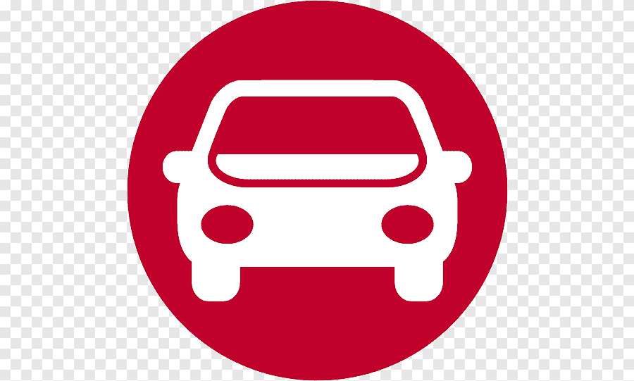

<div class="sidebar-brand">
    <div class="sidebar-brand-logo">
        <span></span>
    </div>
    <div class="sidebar-brand-name">
        <h5>Mini Projet</h5>
        <small>Gestion des Voitures</small>
    </div>
</div>
<div class="sidebar-title">
    <small>Menu</small>
</div>
<div class="sidebar-menu">
    <ul>
        <li>
            <a routerLink="dashboard" routerLinkActive="active">
                <span class="fas fa-home" data-bs-toggle="tooltip" data-bs-placement="right" title="Dashboard"></span>
                <span>Dashboard</span>
            </a>
        </li>

        <li>
            <a routerLink="listVoiture" routerLinkActive="active">
                <span class="fas fa-car -shield" data-bs-toggle="tooltip" data-bs-placement="right" title="Administrateur">

                </span><span>Voitures</span>
            </a>
        </li>

        <li>
            <a routerLink="Modele" routerLinkActive="active">
                <span class="fas fa-user" data-bs-toggle="tooltip" data-bs-placement="right" title="Condidat"></span>
                <span> Modele</span>
            </a>
        </li>
    </ul>
    
</div>

<div class="sidebar-footer">
    <button class="logout-btn" data-bs-toggle="tooltip" data-bs-placement="right" title="Logout"> 
        <i class="fas fa-sign-out-alt"></i> <div class="ms-1">Déconnexion</div>
    </button>
    
</div>

